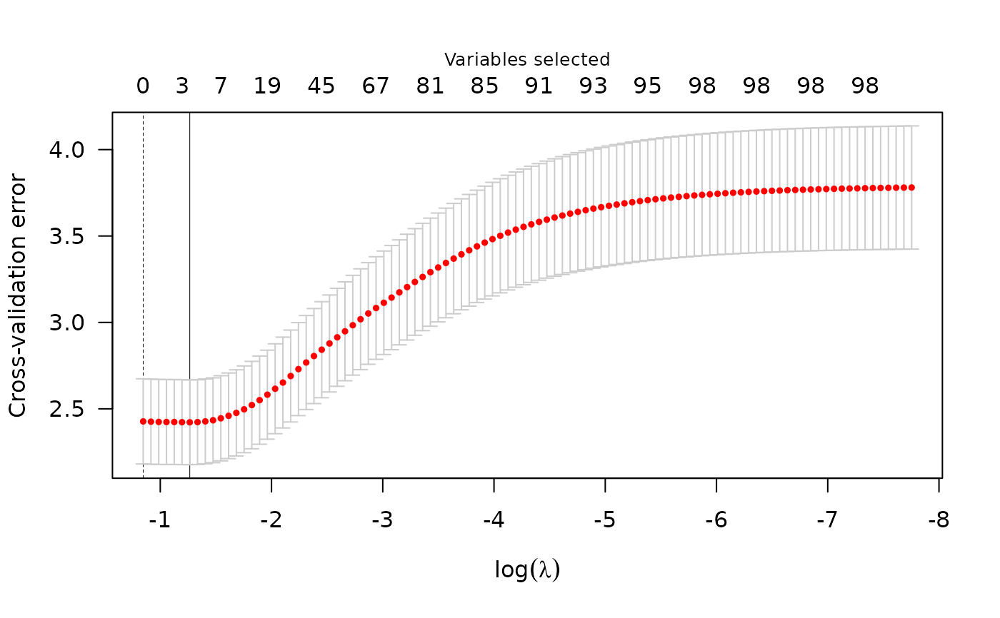

Plot method for cv_plmm class
Arguments
- x
An object of class cv_plmm
- log.l
Logical to indicate the plot should be returned on the natural log scale. Defaults to
log.l = FALSE.- type
Type of plot to return. Defaults to "cve."
- selected
Logical to indicate which variables should be plotted. Defaults to TRUE.
- vertical.line
Logical to indicate whether vertical line should be plotted at the minimum/maximum value. Defaults to TRUE.
- col
Color for vertical line, if plotted. Defaults to "red."
- ...
Additional arguments.
Value
Nothing is returned; instead, a plot is drawn representing the relationship between the tuning parameter 'lambda' value (x-axis) and the cross validation error (y-axis).
Examples
admix_design <- create_design(X = admix$X, y = admix$y)
cvfit <- cv_plmm(design = admix_design)
plot(cvfit)
